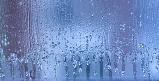

Temperature affects how fast crops grow. Each crop has an ideal temperature range too high or too low can slow growth and reduce yield. Warm temperatures help germination and photosynthesis in many crops. Crop growth depends on environmental factors such as temperature, rainfall, humidity, and soil pH. Proper sunlight and suitable climate conditions help plants grow healthy and increase yield.

HumidityHumidity is the amount of moisture in the air. Proper humidity helps plants stay healthy, but very high humidity can cause fungal diseases. Balanced humidity supports good leaf and stem growth. Humidity plays an important role in crop growth by regulating water loss from plants. Adequate humidity helps maintain moisture balance, supports healthy leaf development, and improves overall crop productivity.
 PH Level
PH Level
Soil pH shows how acidic or alkaline the soil is. Most crops grow well in slightly acidic to neutral soil. Correct pH helps plants absorb nutrients properly. Healthy soil is essential for strong crop growth and higher yields. Proper soil pH and nutrient balance help plants absorb essential minerals, supporting root development and overall crop productivity.
Rainfall provides the water crops need to grow. Too little rain can lead to drought stress, while too much can cause waterlogging and root damage. Regular, moderate rainfall is best for most crops.Adequate rainfall is essential for crop growth and soil moisture. Proper water supply supports seed germination, nutrient absorption, and healthy plant development, leading to improved crop yield.